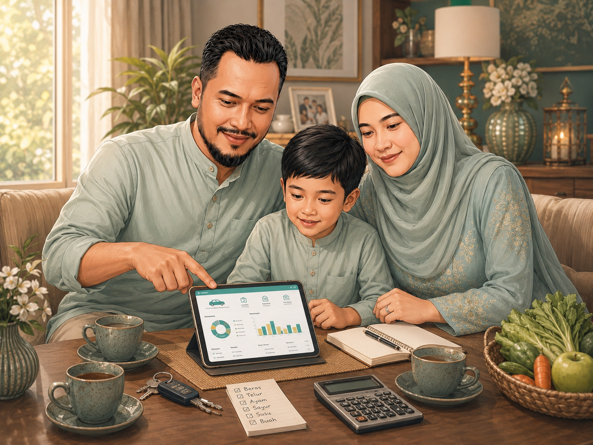
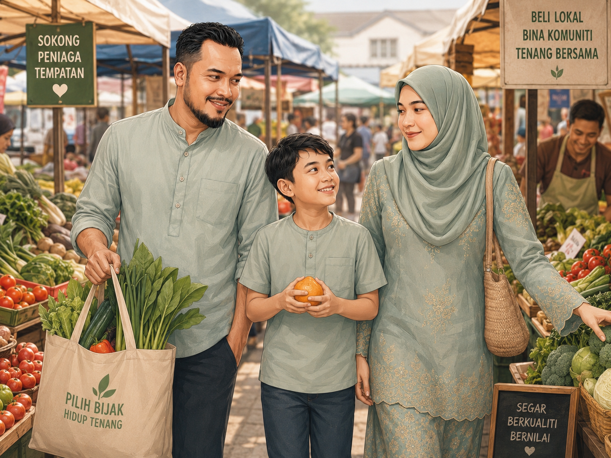

Semak
Lihat ringkasan keadaan keluarga berdasarkan maklumat asas dan label amanah.
AnggaranTenangKITA v4.1 disusun semula sebagai portal perkhidmatan, bukan paparan mod. Susun atur, komponen, bahasa, label amanah data dan aksesibiliti diselaraskan dengan pendekatan MYDS.
Semua data dalam prototaip ini ialah data contoh atau anggaran. Semakan dan keputusan rasmi kekal melalui portal kerajaan berkaitan.
Portal ini menterjemah isyarat ekonomi rasmi kepada bahasa harian keluarga Malaysia. Rakyat boleh memahami tekanan belanja, melihat pilihan harga berhampiran, merancang perjalanan dan menyemak manfaat melalui sumber rasmi.
TenangKITA ialah lapisan kefahaman data rakyat yang boleh melengkapkan ekosistem aplikasi kerajaan sedia ada.

Keputusan harian perlu dijelaskan dengan bahasa mudah, bukan hanya carta dan angka.
Struktur baharu ini menggantikan Mod Rakyat dan Mod Kerajaan. Rakyat mendapat perjalanan utama yang jelas. Agensi mendapat seksyen khusus untuk integrasi, tadbir urus dan keputusan pengurusan.
Lihat ringkasan keadaan keluarga berdasarkan maklumat asas dan label amanah.
AnggaranSenarai pilihan harga berhampiran, disusun dahulu sebelum paparan peta.
Data LangsungAnggaran minyak dan perjalanan untuk membantu keluarga membuat keputusan mingguan.
AnggaranCadangan manfaat hanya menunjukkan kemungkinan berkaitan, bukan kelayakan.
Semak RasmiMasukkan maklumat asas. TenangKITA memberi penjelasan mudah tentang keadaan keluarga, bukan menentukan status ekonomi atau kelayakan bantuan.
Bahagian ini tidak menggunakan perkataan termurah atau dijamin jimat. Ia hanya menunjukkan pilihan harga berhampiran yang perlu disemak sebelum membeli.
Beras, ayam dan minyak masak. Lokasi dan tarikh perlu disahkan melalui sumber rasmi.
Cadangan lokasi berhampiran berdasarkan kawasan. Kehadiran, stok dan masa operasi perlu disahkan.
Pilihan untuk menyemak sayur, ikan dan barang basah mengikut kawasan.
Peta menyokong keputusan selepas rakyat melihat senarai pilihan, jarak dan label amanah.
Gunakan pilihan harga berhampiran, bukan termurah. Gunakan mungkin berkaitan, bukan layak.

Fungsi ini membantu keluarga memahami kesan perjalanan mingguan. Ia bukan ramalan harga minyak rasmi.
km
hari
Berdasarkan andaian 13 km/l dan harga contoh RM2.05/l. Sesuaikan apabila data rasmi diintegrasi.
TenangKITA tidak menentukan kelayakan. Portal hanya menyusun perkara yang mungkin berkaitan dengan keluarga dan membawa rakyat kepada semakan rasmi.

Mungkin berkaitan berdasarkan isi rumah dan keadaan belanja. Keputusan perlu dibuat melalui portal rasmi berkaitan.
Semak Rasmi
Mungkin membantu jika perjalanan harian tinggi dan laluan pengangkutan awam tersedia.
Perlu Integrasi
Mungkin berkaitan jika terdapat program berhampiran kawasan keluarga. Lokasi dan masa perlu disahkan.
Data LangsungSetiap bacaan mesti menunjukkan sumber, status data, label amanah dan had penggunaan. Ini penting sebelum portal bergerak kepada aplikasi mudah alih sebenar.
| Lapisan | Sumber sasaran | Label | Tujuan |
|---|---|---|---|
| Isyarat ekonomi | DOSM / OpenDOSM | Data Rasmi | Memberi konteks inflasi, harga dan tekanan ekonomi. |
| Harga berhampiran | PriceCatcher KPDN | Data Langsung | Menyusun pilihan harga berhampiran untuk semakan. |
| Manfaat | Portal Manfaat MOF | Semak Rasmi | Mengarahkan rakyat kepada semakan rasmi. |
| Profil asas | PADU / MyGDX jika diluluskan | Perlu Integrasi | Mengurangkan input berulang dan meningkatkan ketepatan. |
TenangKITA boleh dibentangkan sebagai produk kerja sebenar. Portal menjadi rujukan utama dahulu. Aplikasi mudah alih dibina selepas aliran, bahasa, data dan integrasi stabil.
Sesuai untuk akses awam, penerangan dasar, capaian carian, integrasi data dan rujukan agensi.
Mobile app perlu lebih ringkas, berasaskan tugas harian, notifikasi dan lokasi pengguna.
Setiap cadangan mesti menunjukkan sumber, masa bacaan, status integrasi dan had penggunaan.
Homepage, semakan keluarga, harga berhampiran, minyak, manfaat, amanah data dan halaman agensi.
DOSM / OpenDOSM, PriceCatcher KPDN, Portal Manfaat MOF dan mekanisme snapshot data.
Tab ringkas seperti Hari Ini, Belanja, Minyak, Pelan dan Semakan dengan notifikasi yang selamat.